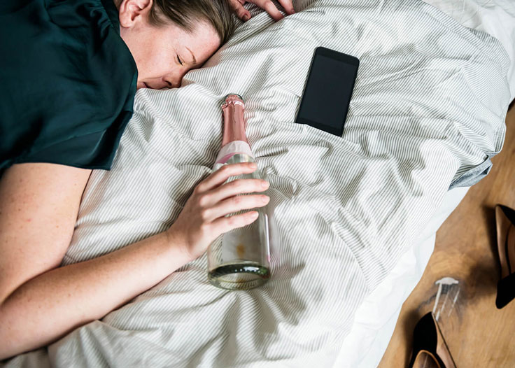
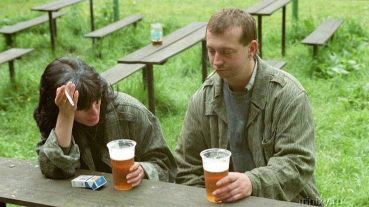
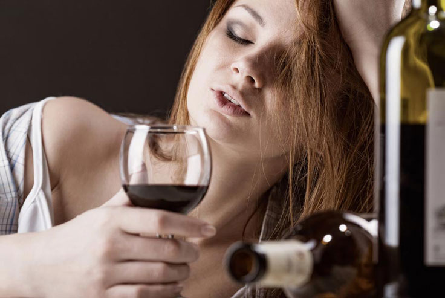

Внезапната любов се превърна в също толкова внезапна катастрофа. Причината за това беше алкохолът. „In vino veritas“ – са казвали римляните. Което означава: „истината е във виното“. Намерих неприятностите си във виното. Сега ми остава само да си спомня тази история, да ви я преразкажа и да направя изводи. И благодаря на Господ, че успях да намеря лекарство и да избягам от прегръдката на зелената змия.
Спомням си нашата предпоследна вечер. Любимата ми лежеше до мен, притискаше се до мен, а аз исках да избягам. Тогава вече реших, че между нас всичко приключи. Това бе поредната вечер прекарана в запой. Както винаги, какво ли не смесихме: имаше и скъп коняк, и червено вино незнайно откъде, и евтин вермут. Всичко това се сля в едно цяло и се превърна една ужасяваща миризма от изпаренията, отровен въздух в стаята и също толкова отровни отношения.

Срещнахме се случайно – на Нова година. Винаги съм вярвал в новогодишните чудеса и видях в това добра поличба. Това, че съдбата ми е подготвила под елхата свиня във формата на последващ алкохолизъм, аз не можех и да предполагам.
По това време самотата вече беше станала хронична. Напълно се бях потопил в работата си и живота ми се превърна в омагьосан кръг – дом-офис-дом, прекъсван от командировки всеки месец в други градове. Това напомняше на безкраен цикъл от изпитания за идържливост, в които за мен, като на мъж, а и попринцип като на човек, просто не ми достигаше поне капка грижа.
Предыдущие отношения продолжались несколько лет, но закончились разрывом. Свою любовь я тогда похоронил, больше не вспоминал и не оплакивал. Продолжал жить в привычном ритме, пока не встретил на вечеринке длинноногую улыбчивую брюнетку. Ее звали Любой, и она была на три года старше меня, что еще больше подогрело мой интерес. У нас сразу же завязалась беседа и появилась взаимная симпатия. Уже через пару месяцев мы стали жить вместе.
В началото не отдавах голямо значение на зависимостта и. Разходките ни задължително бяха комбинирани с пиене на бира по уединените ъгли на парка. Тя изпиваше по три кенчета, едно след друго. Аз пиех с нея, също толкова. И ми се струваше напълно нормално – така бе изградено началото на нашите отношения.

Когато започнахме да живеем заедно, алкохолните истории не останаха забравени в миналото. Омагьосания кръг продължаваше, но в друго амплуа: всяка вечер звучаха фразите: «Скъпи, купи, моля те, червено вино.»; «Мило, може би да изпием по биричка?»; «Душко, вземи нещо от твърдия алкохол».
Вечерите непременно ги прекарвахме с алкохол, а сутринта махмурлука си казваше думата: главоболие, гадене, загуба на паметта станаха мои спътници. Много изпити таблетки за главоболие, гадене и виене на свят по никакъв начин не допринасяха за чувството на срам и вина. Тогава решавах да погася това с още порция алкохол. А моята приятелка просто лекуваше лошото настроение при махмурлук с още алкохол.
Тази ситуация силно ми пречеше. В главата ми се бореха две противоположни мнения – «трябва да поговорим» и «майната му, ще мине, това е временно». Аз избрах първото. Как започнах вече не помня, но май беше така:
– Люба, хайде да пием по-малко? – казах аз.
След което следваше страхотен скандал.Мен досега още никой не ме бе наричал в живота ми алкохоличка!», – викаше и тропаше с крака Любомира. Въпреки че тези думи аз дори не ги произнесох. Да се стигне до компромис, тя отказваше, като го аргументираше с това, че: «Аз съм голям човек вече, и както всеки зрял човек, имам си свите потребности. Имам право да си позволя да се отпусна както аз сметна за добре.». Честно да ви кажа, трябваше да си опаковам нещата и да напусна още тогава. Но раздялата винаги е по-сложен процес от сближаването. Аз няколко пъти опитвах да започна подобни разговори, но те винаги водеха до кавги.
– Как да живея с теб без алкохол? С теб няма за какво да си говорим, - казваше тя с чаша вино в ръката си.

А тя имаше какво да разкаже. И всичките и истории започваха по традиционен начин: «Мы с Ани купихме бира..»; «Седим в кафето, пием вино…»; «Отидохме на плажа и ни наляха…».
И аз и се водех по акъла. Пиех, наливах в себе си литри с алкохол, също намирах одушник в края на работния ден в това. Не придавах голямо значение, смятах че сложния работен ден ми докарва махмурлука.
В такъв ритъм мина около една година, която бе изпълнена в паметта ми с отвратителни спомени. Всичко бе изтрито от спирта.
Осъзнаването дойде внезапно, както това нелепо влюбване. И това се случи в събота сутринта, около пет, когато се събудих от ужасен махмурлук, който не ми позволи да заспя отново. Спах тогава 3-4 часа, не повече. Цялото ми тяло се чувстваше зле, света ми се струваше отвратително враждебен, а аз мизерен отвратителен пияница. Наоколо бе много мръсно, имаше много разхвърляни неща. Силна миризма от алкохолни изпарения се усещаше във въздуха. А до мен спеше някаква смазана рошава жена с вчерашен грим, размазан по подутото лице, а издишваше тя смъртоносни пари.
И в този момент ми стана ясно, че е необходимо да се сложи край. Но ръката отново посягаше към кенчето с бира, защото състоянието ми го изискваше. Люба се събуди и последва примера ми.
Вечер имахме планирана среща с приятели. Е, и как без пиене? Към този момент, пиехме вече през целия ден. Сутрин бира, след това още една, и така до вечерта. А вечер идваше време за тежката артилерия.

Казах на Люба, че искам да се опитам да се излекувам. В отговор на това, тя си врътна пръста около слепоочието с най-обикновени аргументи: «ти не си виждал алкохолици»; «аз си пия с мярка»; «ние сме големи хора и сами решаваме как да живеем».
– Ти сам си решил, че си алкохолик, лекувай се ако искаш. Аз нямам нужда – това бе заключението и.
Нямаше и следа от симпатията и влюбеното състояние. Вътрешно всичко бе разбито на малки парченца: и желанието да обичам, и надеждата за бъдеще, и вярата в чудеса. Люба ме дразнеше и я помолих да напусне апартамента и да изчезне от живота ми.
Имаше и сълзи, и викове, истерика, падаше ми в краката, но бях равнодушен към целия този концерт. Вопъла на тази пяна жена изглеждаше отвращаващо, и единственото, което иска е да остана сам, колкото се може по-скоро. Не беше без затруднения, но все пак успях да накарам Люба да замине при майка си. Завинаги.
Продължих да пия сам. Пиех всеки ден в продължение на четири месеца, въпреки че все си обещавах: «Днес е за последно». Аз разбрах: самостоятелно няма да се справя.
И ето че в неделя ме събуди махмурлука около четири часа сутринта. Настроението ми бе толкова скапано, че диарията и повръщането на фона на това избледняваше. Дойдох на себе си и с треперещи ръце хванах телефона и в гугъл въведох следния текст: «как да откажем пиенето». След като прегледах няколко линка, попаднах на сайта на . Там се съобщаваше, че това средство помага да откажем пиенето и обещават да стане в кратък срок. А предимствата му са, че се състои изцяло от естествени съставки, има положителен ефект върху цялото тяло и възстановява органи, увредени от алкохола.

«Знае ли човек», – помислих си аз и поръчах няколко опаковки от това средство. Звънна ми оператор, за да потвърди поръчката.
Преди да пристигне поръчката с , аз продължавах да пия. А след като получих продукта, незабавно запонах приема му. Първите няколко дни бяха много тежки.. тягата към алкохола оставаше, но аз се стараех да се сдръжа. Въпреки че на два-три пъти си признавам, че имах сривове.
А след седмица някак си ме поотпусна. Мина ми психологическата зависимост да пия. Престанах да съм роб на бутилката, вечерите вече не се асоциираха с алкохола, а утрото – с болката и гаденето. Но както бе написано в инструкцията за , – това е само първия етап от лечението. В никакъв случай не трябва да се спира приема, затова аз продължих да го спазвам по инструкциите.
Постепенно от живота ми изчезнаха приятелите-алкохолици. Просто нямаше вече за какво повече да сме си приятели. Превключих си вниманието на приятели с други интереси.
Оттогава минаха вече 1,5 години и живота ми напълно се промени. Намерих си нова прилична приятелка, с която вечер гледаме филми, готвим храна заедно, разхождаме се, ходим на кино – общо взето страхотно си прекарваме време заедно. А този кошмар остана в миналото... като страшен сън.
Тази история реших да споделя с вас, понеже смятам, че моя опит може да бъде полезен на други хора, които имат склонността да злоупотребяват с алкохола. – това е нещото, което ме изкара от дъното на живота и не ми даде да загина. Хора, спрете! Не се убивайте. Животът е прекрасен, и за да видите красотата му, трябва да се откажете от пагубните си навици. И понякога да се отървете от хората, които ви дърпат към дъното.
По-долу ще оставя линк за сайта на . Между другото, там сега има намаление. Побързайте.